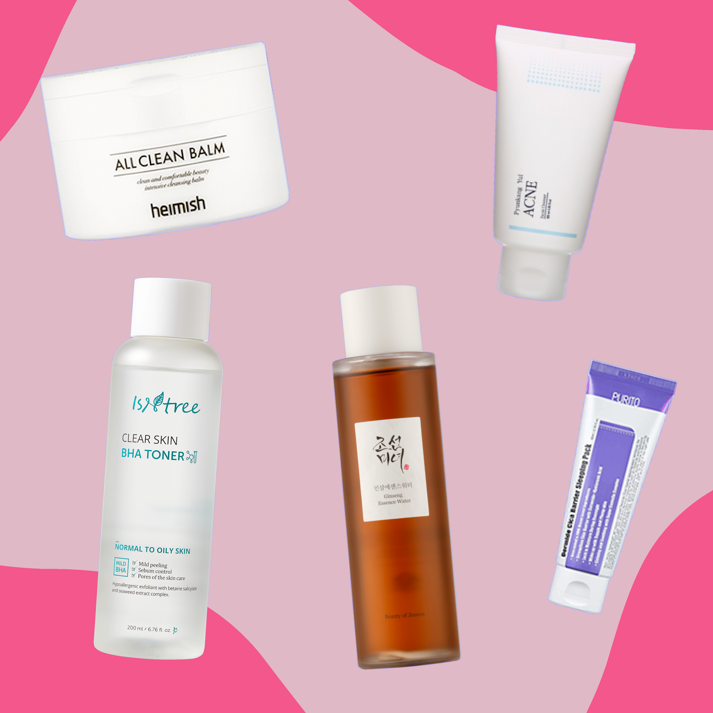

Simply Clear
Description: Exclusive to Korean-Skincare Fed up with not finding the right products to help soothe and clear your skin?Then its time for you to meet Jazzy! Jazzy is a skincare enthusiast, that isn't afraid to show the world her barefaced truths about skin and products.
Star Rating
Laila is the embodiment of beauty, grace and compassion. But don't let the name of her kit fool you, she also has a love for martial arts, and tackles her fears head on.
Exclusive to Korean-Skincare
Fed up with not finding the right products to help soothe and clear your skin?
Then its time for you to meet Jazzy! Jazzy is a skincare enthusiast, that isn't afraid to show the world her barefaced truths about skin and products. Jazzy is a woman who enjoys researching and learning, while also keeping up with all the newest skincare products, hypes, and trends! She invites you into her everyday life; as a beauty fanatic, a diligent worker, and above all else - a dedicated mother that stays true to herself. Its time to simply clear troubled skin.
Jazzy's Kit is suitable for acne-prone skin, it doubles to not only clear but also soothe and hydrate skin.
Her set includes:
- Heimish All Clean Balm
- Pyunkang Yul Acne Facial Cleanser
- Isntree Clear Skin BHA Toner
- Beauty Of Joseon Ginseng Essence Water
- Purito Dermide Cica Barrier Sleeping Pack
A few of Jazzy's thoughts on the products:
Heimish ~ All Clean Balm is a lovely first cleanse; easily melts away makeup and softens the dirt in your pores. This product has a faint scent of coconut and shea, while leaving the skin feeling nourished and hydrated.
Pyunkang Yul ~ Acne Facial Cleanser is a gentle cleanser, with no fragrance and non-foaming. Packed full of great ingredients, like Willow Bark and Green Tea Extract, it leaves your skin feeling squeaky clean, but not stripped or drying.
Isntree ~ Clear Skin BHA Toner is like magic in a bottle! The impressive formula penetrates deep into your pores, to gently dissolve the dirt; resulting in less breakouts, smoother skin and smaller pores. Its a mild BHA, so it wont damage your skin barrier or risk over-exfoliating!